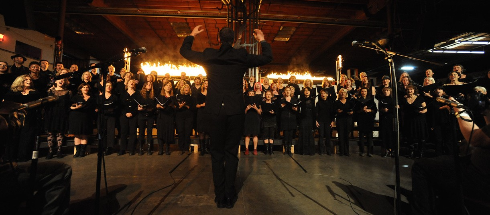

Welcome to the Calling All Choir
Join us for our new season
Finno-Ugric Landscapes
Open House and first Rehearsal: Wednesday, February 5th. 6:45-9 pm
St. Gregory’s Episcopal Church (500 De Haro St., San Francisco)

Explore music in the Finno-Ugric traditions with the Calling All Choir. Our seasons are open to all singers with no auditions required. Our first rehearsal is an open house we all are welcome to come and participate. Check out our season and see if you’d like to join us. Preview some of the songs we will be working on this season.
About us

The Calling All Choir is a San Francisco community singing organization led by founder and artistic director, Mark Growden and Assistant Musical Director, Michael Kaulkin.
Our mission is to provide San Francisco Bay Area communities with a self-selecting choral group that performs works that are moving, challenging, beautiful, and often fun. Now in its 11th season, our choir includes seasoned professionals and devoted amateurs. Members range in age from 8 to 80 plus and readily share with each other the fun and experience for growing musically.
The Calling All Choir was named best choir in the 2015 Oakland Magazine “Best of the Bay” issue. The choir performs service sings throughout each season for retirement homes, residential treatment centers, hospitals, and developmental disability programs. We also have a few special shows throughout the season with other choirs, cabarets, and other events.
Each season we sing a mix of classical, and folkloric music based on a theme. Our upcoming season’s theme is “Knowing She Has Wings – Music by Female Composers and Arrangers”. Themes from previous seasons include:
- “Fire, Tears, and Love Alive – A Celebration of Russian Music”
- “The Land of Song – Music of the Baltics”
- “The Blue of our Lakes, The White of our Winters – A Celebration of Finnish Music”
We end each Season with Shows at the stunning Mission Dolores Basilica. Our performances, like our mission, are community focused since we often invite our audiences to sing with us on a song or two.
Here’s a list of some pieces we’ve performed in past seasons (you can find videos of the choir performing many of these pieces in the CAC YouTube channel performance playlist):
- Bogoróditse Djévo – Arvo Pärt – Estonia
- Bogoroditse Devo – Igor Stravinsky
- Lux Aurumque – Eric Whitacre
- Panda Chant II – Meredith Monk
- Angus Dei III – from Missa Simile Est Regnum Coelorum -Tomás Luis de Victoria – Renaissance Italy
- Laulusild – Veljo Tormis – Estonia
- El Hambo – Jaakko Mäntyjävi – Finland
- Solfeggio – Arvo Pärt – Estonia
- Earth Song – Frank Ticheli
- La Martiniana – Arr. David Conte – Mexico
- Good Night, Dear Heart – Dan Forrest
- Barechu – Solomone Rossi – Italian Renaissance
- Pärismaalase lauluke (An Aboriginal Song) – Veljo Tormis – Estonia
- Anoj Pusėj Dunojėlio – Vaclovas Augustinas – Lithuania
- Bėkit bareliai – M.K. Čiurlionis – Lithuania
- Past Life Melodies – Sarah Hopkins – Australia
- Estrela E Lua Nova – Heitor Villa-Lobos – Brazil
- Tallis’ Canon – Thomas Tallis – Elizabethan England
- Alabama, Mississippi – Bessie Jones and Martin Luther King Jr. – The American South
- A Szeleknek Lengo – Hungarian Traditional
- Hamba Lulu – arr. Mike Brewer – Zambia
…and multiple compositions by our Artistic Directors, Mark Growden and Michael Kaulkin
The Chromatic Community Music Center is a fiscally-sponsored affiliate of InterMusic SF, a not-for-profit organization dedicated to small-ensemble music in the San Francisco Bay Area.
Join us
New Members
The Spring 2020 Season begins on February 5th. You may “drop-in” on our first rehearsal to see if we’re a good fit for you (you can pre-register for the first-night drop-in rehearsal here). Feel free to bring a friend and find out what it’s like to sing in our choir. We request a donation of $20 to help offset rehearsal costs.
ALL ARE WELCOME. NO AUDITIONS.
RETURNING MEMBERS
Sing with us again! Please pre-register for the Spring 2020 season. Pre-registration lets us know how many people are singing with us and helps with pre-season expenses. Register to sing with one payment or via installments. For work trade or other payment options select RSVP on the one-time payment page and let us know your preferences or questions.
Make sure you don’t miss week one; we will learn new material starting the first rehearsal! We are rehearsing in the same location, but only on Wednesday evenings.
Date: Wednesday, Feburary 5th, 2020
Rehearsal begins promptly at 7 pm and runs until 9:15 pm
Location: St. Gregory’s Episcopal Church – 500 De Haro St, San Francisco, CA 94107
Frequently asked questions
What kind of music do you sing?
We have a different theme each season. Our current season’s theme is music by female composers and arrangers and includes works from Sweden, the Middle East, the American South, Finland, Germany, and more. Some pieces are historic, others contemporary – some are “classical” and some are folkloric.
You mean, I don’t have to be a trained singer?
No, although many of our singers are highly trained. Our group functions so well because of the mix of skill levels. If you love to sing, come sing with us.
Do I need to know how to read music?
It helps, but isn’t required. We provide some music literacy training.
Do you give Concerts?
Yes.
Season Finales: We conclude each season with season finale concerts at the Mission Dolores Basilica in San Francisco.
Service Sings: We bring music to underserved groups by performing for no fee at venues such as hospitals, retirement homes, residential treatment centers, and developmental disability programs.
Regional Shows: We are often invited to perform at venues around the state.
Note: There is no requirement that every member sing in the concerts, but we enthusiastically recommend the experience.
Where does the Choir meet?
Rehearsals are held at St. Gregory of Nyssa Church in San Francisco (Potrero Hill).
Donate to us
We accept and appreciate all donations, which help sustain our community chorus and aid us in our mission to inspire connection through community music-making. The Calling All Choir is currently in the process of gaining 501(c)3 status and has fiscal sponsorship through InterMusic SF. All donations made through our sponsorship are tax-deductible. To make a one-time or reoccurring contribution online, please use the button below.
Donate onlineIf you wish to contribute via check or money order, please make them out to “Intermusic SF” and write “Chromatic Community Music Center” in the memo field.
Checks can be send to: Chromatic Community Music Center / PO Box 14105 / San Francisco, CA 94114
For more information please contact us at sponsorship@callingallchoir.org
“Thank you for your help to make The Calling All Choir financially strong.” – Mark Growden
Book us
Like what you hear?
Want us to come sing for you?
The Calling All Choir supports the San Francisco Bay Area by providing free concerts for under served communities such as retirement homes, schools and hospitals.
We are also available to perform singing engagements at venues and special events.
To book our choir, or more information about our singing organization please email us at admin@callingallchoir.org.
Contact us

For the administrate assistant, please email admin@callingallchoir.org
For the music director, please email mark@markgrowden.org
For sponsorship questions, please email sponsorship@callingallchoir.org
For work-trade questions, please email worktrade@callingallchoir.org
The Team
Mark Growden, Artistic Director and Founder
Mark Growden is a composer, multi-instrumentalist, singer, music educator, visual artist, and the founder/artistic director of The Calling All Choir. He is mentored by Vance George and Michael Kaulkin; is a Alice Parker Composers Workshop Fellow; and has also studied with Remy Charlip, Doug Goodkin, and Loren Pickford. Mark received his Orff Schulwerk music education certificate from Mills College in 1996. He has released several critically acclaimed albums and has toured the US extensively. He has composed original musical scores for dozens of dance and theater companies and scored several films. Growden has devoted his life to making music for other people and to helping other people make music for themselves.
Ann Elizabeth Jones, Assistant Artistic Director
Known for her musicality and expressive singing, soprano Ann Elizabeth Jones is a voice teacher and classical singer based in San Francisco. Before moving to California, Ann was based in New York City where she pursued a thriving career on the opera and concert stage both at home and abroad. As a professional choir singer, she has sung under the batons of Kurt Masur, Marin Alsop, John Eliot Gardiner, and Nikolaus Harnoncourt. She is a frequent recitalist, and performs throughout the Bay Area in both solo concert and chamber music ensembles. Ann holds a Masters Degree in Vocal Pedagogy, and is passionate about the voice and its possibilities. Outside of her performing, she enjoys a thriving private teaching studio as well as consulting with various choirs and musical organizations around the Bay Area.
Tyler Heibeck, Board President
Tyler’s professional training is in chemistry with a focus on biomolecular mass spectrometry with degrees from Juniata College and Boston University. Music has always been a part of his life. Although his current emphasis is in group vocal performance and melodic jaw harp, past formal musical training has included piano and violin. He has sung with several choruses, including the Backbay Choral, Mid-Columbia Master Singers, and the San Francisco City Chorus. In the arts management sector, he served on the board of the San Francisco City Chorus (president and secretary) for five years and is currently a primary organizer with the Rathskeller Club (immersive theater), Radiant Society (experience design and sharing), and the Far Flug Forest (community-driven art retreat). Past and semi-ongoing contributions include Noise Weave, Stone Soup, Canavan Rally, and the Explorers Guild. As an active amateur photographer (http://heibeck.com) he focuses on landscape, clandestine art gatherings, night, and travel documentation.
Ruth Tringham, Librarian and Board Secretary
By training and profession Ruth is an archaeologist. She has investigated very early farmers (all long dead) all over Eastern Europe and, most recently, in Turkey. She came to the US from England as part of the so-called “brain drain” and, after an East Coast sojourn, ended up very happily in California teaching at UC Berkeley. Ever since the technology was available, she has been incorporating digital audio-visual media into her research. After retiring from teaching a few years ago, she founded with some colleagues a non-profit company, the Center for Digital Archaeology. Music has always been in her life. She played violin from the age of 9 until college. She gave up the violin and took up the guitar, playing folk songs at excavations wherever she landed up, improvising to match the local rhythms and melodies. She didn’t get into choral singing until she came to the US, but has continued to do that as a passionate part of her life. More at http://ruthtringham.com/
Jess Hobbs, Art Department
People have often described Jessica Hobbs as someone trying to lead a compulsively artistic life, which is more or less true. She started off her adventure in a small Sierra Foothill town and eventually meandered her way to the San Francisco Bay Area. Along the way Jess has worn many hats; running and creating community art programs, counseling teenagers, curating, exhibiting, designing, photographing, running a power company, and playing with some girls who love lipstick and accelerants. She is an MFA graduate from the San Francisco Art Institute and believes collaboration is key in community and art. This can be seen through the work of her non-profit the FLUX Foundation and her open-source alternative energy company All Power Labs.
Jay Kravitz, Web Designer
Running the gamut of disciplines, Jay’s portfolio encompasses metal, glass, fire, ink, photography, found objects, web and graphic design, event management, music and performance – twisting sculpture into visual and tactile emblems of life. http://rsneight.com